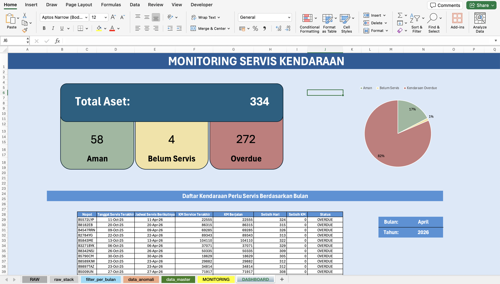
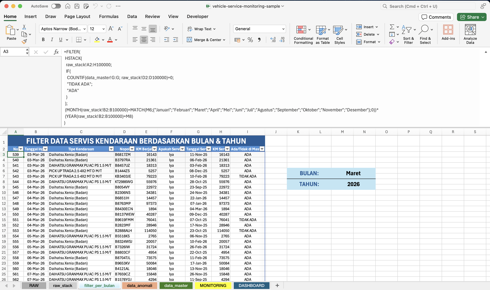

01 / 06 Operational Dashboard — Fleet Logistics
Vehicle Service Monitoring Dashboard
An Excel monitoring system that flags which fleet vehicles are on schedule, overdue, or not yet serviced.
- 334Vehicles tracked
- 8 linked sheetsPipeline
- Built soloStatus, in use
MethodExcel · Data validation
Service records were collected manually from branches across the country. The workflow reshapes monthly submissions from wide to long format, checks them against the master fleet list, flags potential data issues, and feeds a dashboard showing which vehicles are on schedule, overdue, or not yet serviced. The monitoring rule is 180 days or 10,000 kilometers since the last service. The data shown is synthetic and does not contain FIFGROUP’s actual records.
Internship project, FIFGROUP. All names, branch codes, and identifiers in the workbook are synthetic.

